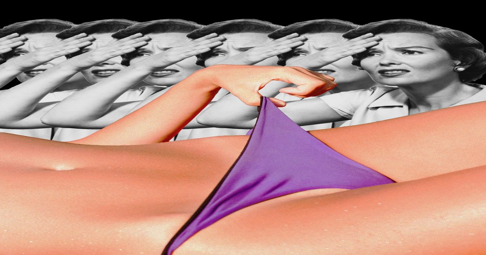

Почему некоторые женщины жалеют о лазерной эпиляции бикини
Австралийская фотограф Элли Седжвик публично задалась вопросом, не ошиблась ли она, устранив волосы на бикини и подмышках лазером. Её опрос в Instagram и обсуждения в сети показали, что сожаление далеко не единичный случай.
Культурный контекст и смена идеалов
В конце 1990‑х и начале 2000‑х годов гладкая кожа считалась признаком успеха и гигиены, а волосы на теле — признаком небрежности. Поп‑культура, реклама и салоны бразильского воска формировали образ «идеальной» женщины, лишенной любых заростей.
Со временем общественное мнение начало смещаться: известные личности открыто демонстрируют естественные волосы, а движение за позитивное тело призывает принимать себя такой, какая ты есть. Этот культурный разворот заставляет многих переосмыслить решения, принятые под давлением моды.
Ретроспективные взгляды журналисток, в частности колонки в Allure и эссе в The Cut, фиксируют волну сожаления у женщин, которые в юности стремились к полной гладкости и теперь видят в этом потерю части женской идентичности.

Физиологическая роль волос и возрастные изменения
По данным Американского колледжа акушеров и гинекологов, волосы на лобке выполняют защитную функцию: они снижают трение при движении и половом акте, а также создают барьер для бактерий, аналогично ресницам или носовой щетине.
С возрастом волосное покрытие естественно редеет, кожа теряет упругость, и многие женщины после менопаузы бывают рады любому дополнительному слою, который смягчает контакт с бельем и одеждой.
Приём препаратов группы GLP‑1, популярных для коррекции веса, может ускорить выпадение волос и уменьшить объём подкожно‑жировой клетчатки в области бикини, что делает отсутствие естественного покрова ещё более заметным.

Психологические и социальные аспекты
Сексуальный терапевт Кейтлин Бовард подчёркивает, что волосы — форма самовыражения и могут подтверждать гендерную идентичность; их удаление ради чужого одобрения часто снижает уверенность в интимной сфере.
Истории матерей, жалеющих о том, что дети не видели естественного женского тела, иллюстрируют, как личный выбор влияет на восприятие следующего поколения.
Мужчины также сталкиваются с аналогичным сожалением: комик Тревор Ноа признался, что удаление бороды лазером в начале карьеры лишило его возможности вырастить густую растительность в более зрелом возрасте.
Что стоит учесть перед процедурой
Лазерная эпиляция даёт длительный эффект, но результат необратим: восстановление волос в зоне бикини практически невозможно без пересадки, поэтому решение должно быть осознанным.
Стоит обсудить с дерматом или косметологом свои ожидания, возможные изменения кожи с возрастом и влияние гормональной терапии на рост волос.
Если есть сомнения, можно начать с временных методов — бритья, воска или сахарирования — чтобы почувствовать, комфортно ли вам без волос, прежде чем принять окончательное решение.
Что обсудить с врачом перед лазерной эпиляцией
На консультации важно честно рассказать специалисту о гормональном фоне, приёме лекарств, заболеваниях кожи и планах на будущее — например, о возможной беременности или менопаузе. Лазер действует на пигмент волоса, поэтому результат зависит от сочетания цвета волос и фототипа кожи: на тёмных волосах при светлой коже эффект предсказуемее. Обсудите, что процедура необратима, и волосы в зоне бикини не восстановятся полностью, даже если через годы изменится модный идеал или личное отношение к естественному телу. Врач должен объяснить, как цикл роста волос влияет на интервалы между сеансами, и почему гарантии полного удаления не дают.
Перед курсом исключите загар и загорательные кремы на несколько недель, не используйте пинцет, воск или сахарную пасту — волосок должен остаться в фолликуле. День перед сеансом сбрийте зону станком, оставив щетину 1–2 мм, чтобы луч захватил пигмент, а не обожгал кожу. Процедура противопоказана при активных воспалениях, герпесе, онкологии, приёме фотосенсибилизаторов и в период лактации. Конечный результат формируется индивидуально: на него влияют густость волос, гормональные сдвиги, соблюдение рекомендаций и особенности регенерации кожи. Реалистичные ожидания и диалог с врачом снижают риск сожаления о принятом решении.
Коротко: Сожаление о лазерной эпиляции бикини становится заметным явлением, связанным с культурной сменой идеалов, физиологической ролью волос и личной идентичностью. Осознанный выбор метода удаления волос требует учёта возрастных изменений и психологического комфорта.
А вы когда‑нибудь жалели о решении убрать волосы навсегда? Делитесь опытом в комментариях.